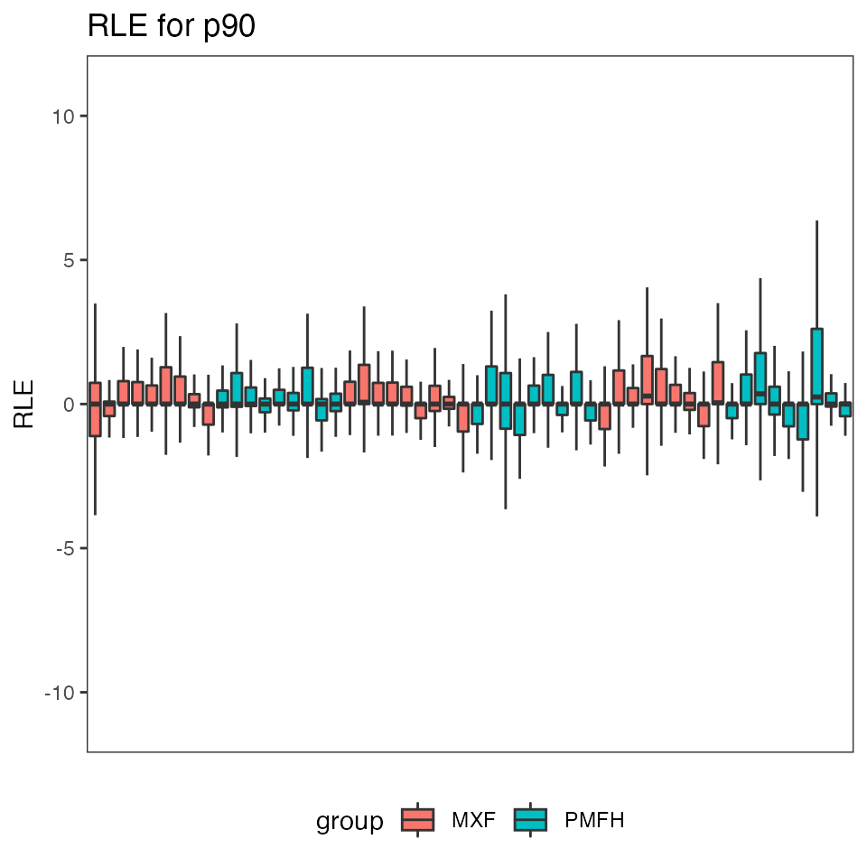
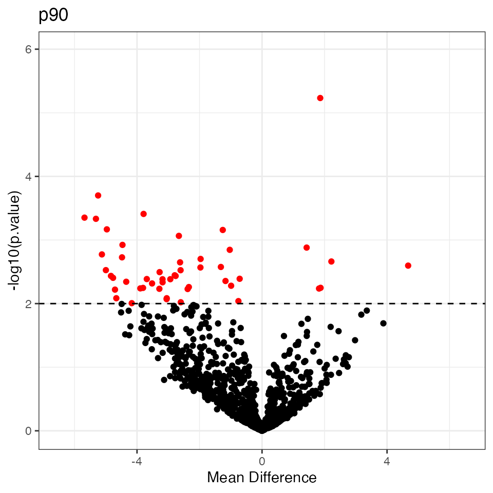
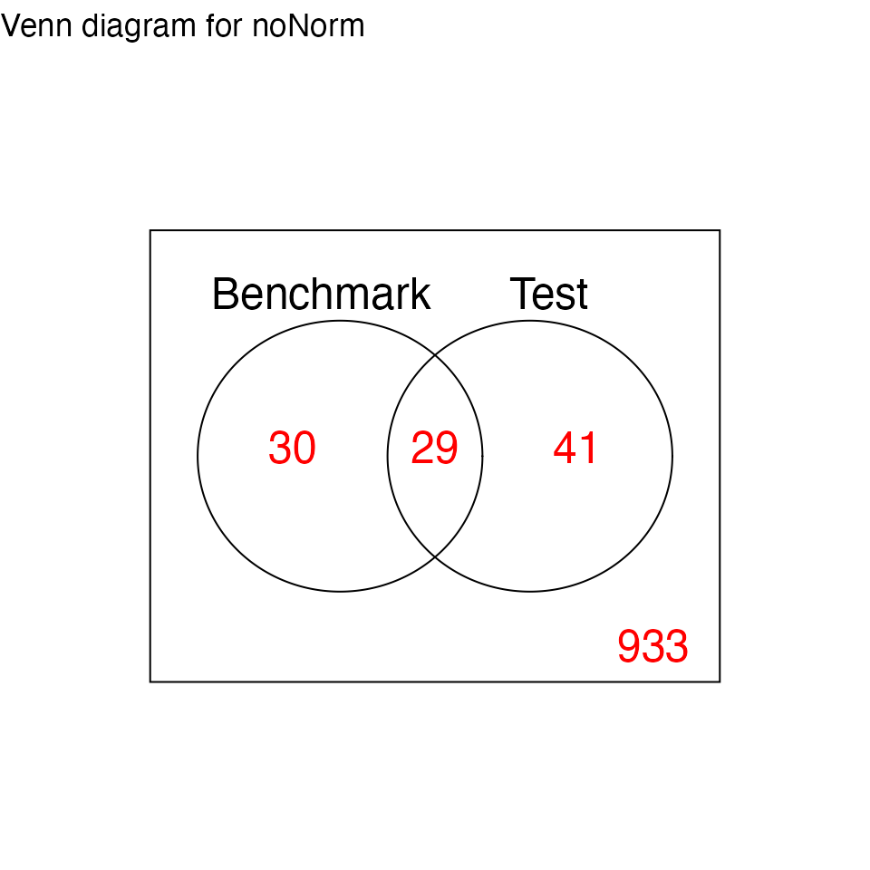
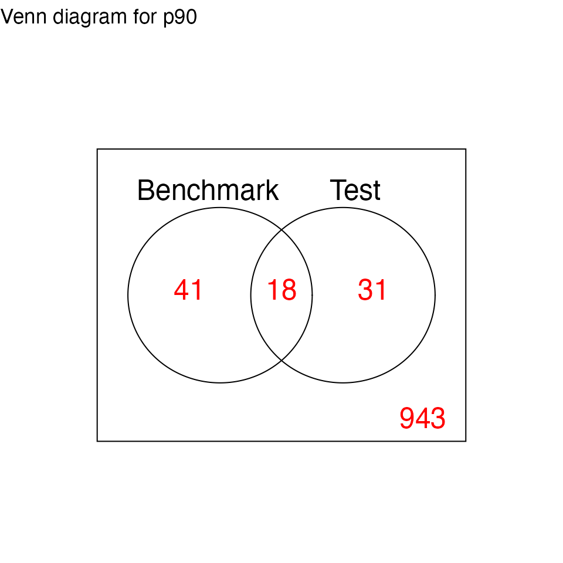
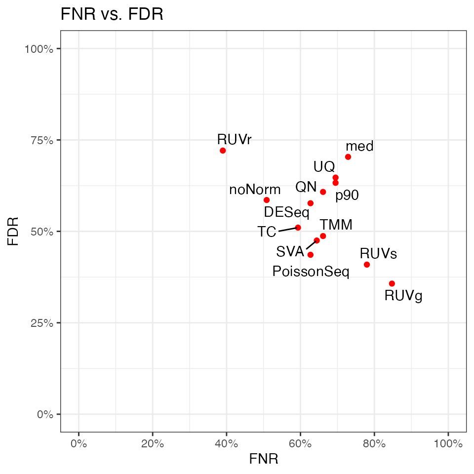
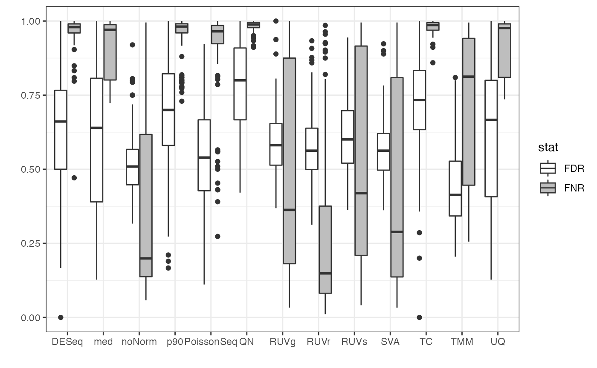

PRECISION.SEQ Example Usage
p90_Example.RmdIntroduction
In this vignette, we demonstrate an example usage of functions in the PRECISION.seq package. It assesses the performance of the 90th percentile normalization (p90) method, which normalizes the dataset using the 90th percentile (similar to upper quantile normalization), in comparison with nine other normalization methods.
The analysis pipeline works as follows: We first assess evidence of differential expression in the benchmark data without normalization using voom. The benchmark data was collected using uniform handling to minimize any handling effects and, hence, differential expression in the benchmark data serves as a “gold standard”. On the other hand, the test data contains the same samples as the benchmark data, however it was sequenced over multiple years without careful study design, resulting in unwanted depth variations. We then assess differential expression in the dest data before and after normalization and compare it with the gold standard. The agreement of this comparison in summarized using graphically using various plots, and numerically using measures such as the false negative rate (FNR) and the false discovery rate (FDR). See also this vignette for more information on the data sets.
For simplicity, all of these steps have been packaged into a simple pipeline consisting of the following 2 steps:
- Normalization of the test data using the normalization method under study.
- Application of the
precision.seqfunction.
The precision.seq function performs the full normalization assessment and returns a comparison to all included normalization methods.
Package Installation
First, we load the PRECISION.seq package.
90th Percentile Normalization
We fist define a function for normalization using the 90th percentile as a scaling factor for each sample. Then the we apply this p90 normalization to the test data in order to later compare it to the noramlization methods provided by the precision.seq package.
percentile_90_norm <- function(raw, groups) {
dat.DGE <- DGEList(counts = matrix(raw, ncol = length(groups)),
group = factor(groups),
genes = rownames(raw))
q.factor <- apply(dat.DGE$counts, 2, function(x) quantile(x[x != 0], probs = 0.9))
scaling.factor <- q.factor/1e6
dat.normed <- t(t(raw)/scaling.factor)
return(dat.normed)
}
percentile.norm <- percentile_90_norm(data.test, data.group)Performance Assessment of 90th Percentile Normalization using Empirical Data
We assess the performance of p90 using the precision.seq function. It includes (1) normalization of the test data using p90 and nine other normalization methods that are implemented in the package, (2) differential expression analysis using voom or edgeR for the normalized data and for the unnormalized benchmark data, (3) comparison of the differential expression statuses between the normalized test data and the benchmark data, and (4) graphical display and numerical summary of the comparison.
res.p90 <- precision.seq(percentile.norm, method.name="p90")
# Relative log expression
print(res.p90$p.RLE$noNorm)
#> Warning: Removed 367 rows containing non-finite values (stat_boxplot).
print(res.p90$p.RLE$p90)
#> Warning: Removed 1993 rows containing non-finite values (stat_boxplot).
# Volcano plot for DE
print(res.p90$p.volcano$p90)
# Venn Diagram of DE statuses
print(res.p90$p.venn$noNorm)
print(res.p90$p.venn$p90)
# FNR-FDR plot
print(res.p90$p.FNR_FDR)
Performance Assessment of p90 Normalization using Simulated Data
The assessment is extended to simulated data reflecting various patterns of differential expression. For a full description of the simulation algorithm, please refer to the paper Statistical Assessment of Depth Normalization for Small RNA Sequencing.
Extract Simulated Data
20,000 simulated pairs of test data and benchmark data sets were generated in advance. The user can specify: (1) a range for the proportion of differentially expressed markers, and (2) a range for the median of the mean differences, and use the function simulated.data to extract the simulated data set pairs that fall into these two ranges. In the example shown here, the proportion of differentially expressed markers is set to 15% to 25% and the range of the median of mean differences is set to between 2 to 4.
set.seed(12345)
num.sets = 100 # number of data sets
sim.groups = c(rep('MXF',27),rep('PMFH',27)) # sample groups
# Get simulated data sets with the specified proportion of differentially
# expressed markers and specified median mean difference
simulated <- simulated.data(proportion = c(0.15, 0.25),
median = c(2, 4),
numsets = num.sets) Boxplot for FDR and FNR
Each simulated test data set is normalized with 90th percentile. The pipeline function pip.simulated.data is then used to compute the agreement of differential expression statuses for simulated test data set with that for its paired simulated benchmark data set.
p90.norm <- list()
for (i in 1:num.sets) {
p90.norm <- append(p90.norm, list(percentile_90_norm(simulated[[i]]$simulated_test, sim.groups)))
}
res <- pip.simulated.data(data=simulated, groups=sim.groups, norm.counts=p90.norm, method.name="p90")
print(res$p.boxplot)